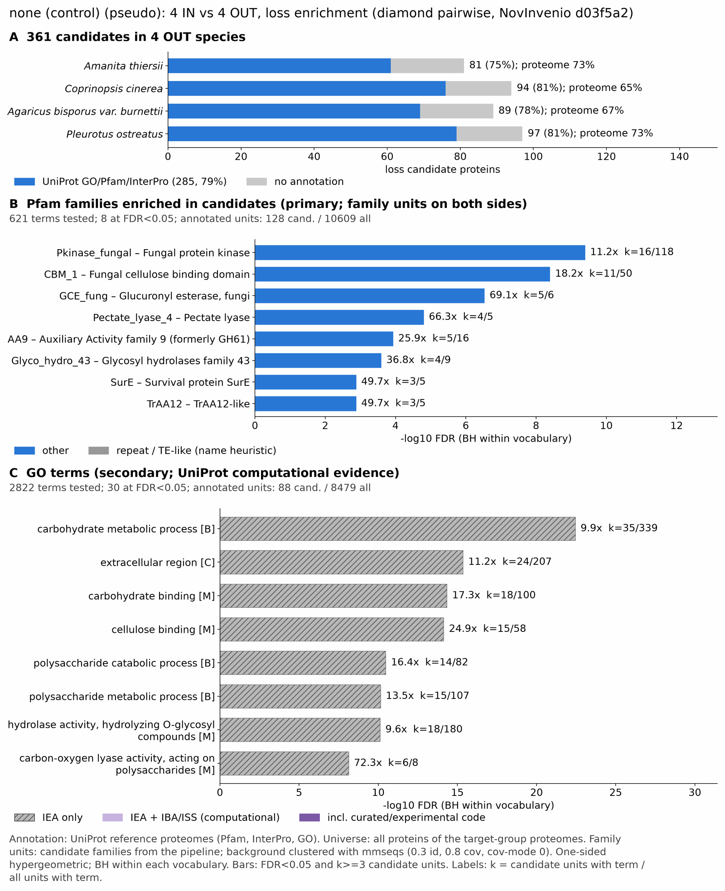

yc pseudo ectomycorrhizal: functional enrichment (loss)
One-sided hypergeometric test per term; Benjamini-Hochberg FDR within each scope, level and vocabulary. Candidates are the loss candidates: gene families present in the OUT group and absent from the IN group. Universe: proteome. Background clustered: True (46144 sequences in 22248 clusters, mmseqs easy-cluster --min-seq-id 0.3 -c 0.8). Family level: one unit per candidate family and per background cluster.
Sources: Pfam: 2026-01-27-Pfam38.2; InterPro entries: 110.0; GO: releases/2026-07-26; analysis generated 2026-10-24T14:50:59. Source tables: /bigdata/stajichlab/jstajich/projects/NovInvenio_Investigations/studies/fungi/yeast_convergence/yc_pseudo_ectomycorrhizal/analysis/enrichment/outputs/loss/proteome_clustered.
Full record: PROVENANCE. Run report: report.html.
- Annotation provenance is not fully recorded: PROVENANCE.yaml lists the per-species annotation files and their checksums, but not the UniProt release they come from.
- GO results are secondary. GO annotations include computational evidence (IEA, IBA); the GO evidence column shows if a term has non-IEA support.
- Candidate families (pipeline clustering of candidates) and background clusters (mmseqs clustering of the background proteome) are made by different runs, so family-level counts are not fully comparable.
- Low annotation: the candidate set has less than 50% annotation for GO 49.3%. Enrichment for these vocabularies has low power.
Summary figure

Annotation coverage
Fraction of proteins with at least one term per vocabulary. Universe = all proteins of the species; candidates = the candidate set.
| Species | Set | Proteins | Pfam | Pfam clan | InterPro | GO | Any |
|---|---|---|---|---|---|---|---|
| Amanthie | universe | 10343 | 67.2% | 54.7% | 72.8% | 57.9% | 72.9% |
| Amanthie | candidates | 81 | 59.3% | 54.3% | 74.1% | 43.2% | 75.3% |
| Ccin | universe | 13334 | 58.5% | 47.3% | 64.8% | 47.5% | 64.9% |
| Ccin | candidates | 94 | 77.7% | 68.1% | 79.8% | 52.1% | 80.8% |
| Agbis | universe | 11204 | 61.4% | 49.9% | 67.1% | 52.2% | 67.2% |
| Agbis | candidates | 89 | 62.9% | 57.3% | 76.4% | 43.8% | 77.5% |
| Pleuostr | universe | 11624 | 66.9% | 54.3% | 72.9% | 56.1% | 73.2% |
| Pleuostr | candidates | 97 | 75.3% | 65.0% | 80.4% | 56.7% | 81.4% |
| ALL_OUT | universe | 46505 | 63.2% | 51.3% | 69.1% | 53.1% | 69.3% |
| ALL_OUT | candidates | 361 | 69.2% | 61.5% | 77.8% | 49.3% | 79.0% |
Tests summary
Per vocabulary: terms with FDR < 0.05 / terms tested. Protein level counts proteins; family level counts candidate families and background clusters.
| Scope | Level | Cand. units | Pfam sig / tested | Pfam clan sig / tested | InterPro sig / tested | GO sig / tested |
|---|---|---|---|---|---|---|
| whole_set | family | 197 | 8 / 621 | 7 / 292 | 20 / 1377 | 30 / 2822 |
| whole_set | protein | 361 | 29 / 1762 | 15 / 420 | 70 / 3797 | 55 / 4527 |
| Agbis | family | 75 | 2 / 273 | 2 / 212 | 7 / 702 | 10 / 2184 |
| Agbis | protein | 89 | 4 / 381 | 4 / 236 | 12 / 931 | 10 / 2322 |
| Amanthie | family | 66 | 0 / 276 | 3 / 219 | 6 / 699 | 4 / 2234 |
| Amanthie | protein | 81 | 0 / 372 | 4 / 234 | 6 / 916 | 7 / 2361 |
| Ccin | family | 73 | 4 / 311 | 4 / 226 | 11 / 772 | 21 / 2283 |
| Ccin | protein | 94 | 7 / 438 | 6 / 242 | 23 / 1041 | 31 / 2420 |
| Pleuostr | family | 76 | 4 / 325 | 4 / 224 | 11 / 780 | 14 / 2092 |
| Pleuostr | protein | 97 | 5 / 440 | 5 / 238 | 15 / 1050 | 18 / 2247 |
Top 25 Pfam terms (whole set, family level)
25 rows shown, ordered by FDR then p-value; 8 have FDR < 0.05 (bold).
| Term | Name | k / N cand. | n / M bg | Fold | FDR (BH) |
|---|---|---|---|---|---|
| PF17667 | Pkinase_fungal: Fungal protein kinase | 16 / 128 | 118 / 10609 | 11.238 | 3.99e-10 |
| PF00734 | CBM_1: Fungal cellulose binding domain | 11 / 128 | 50 / 10609 | 18.234 | 3.97e-09 |
| PF22244 | GCE_fung: Glucuronyl esterase, fungi | 5 / 128 | 6 / 10609 | 69.069 | 2.91e-07 |
| PF00544 | Pectate_lyase_4: Pectate lyase | 4 / 128 | 5 / 10609 | 66.306 | 1.56e-05 |
| PF03443 | AA9: Auxiliary Activity family 9 (formerly GH61) | 5 / 128 | 16 / 10609 | 25.901 | 1.15e-04 |
| PF04616 | Glyco_hydro_43: Glycosyl hydrolases family 43 | 4 / 128 | 9 / 10609 | 36.837 | 2.52e-04 |
| PF01975 | SurE: Survival protein SurE | 3 / 128 | 5 / 10609 | 49.73 | 0.001 |
| PF22807 | TrAA12: TrAA12-like | 3 / 128 | 5 / 10609 | 49.73 | 0.001 |
| PF07470 | Glyco_hydro_88: Glycosyl Hydrolase Family 88 | 2 / 128 | 5 / 10609 | 33.153 | 0.088 |
| PF09451 | ATG27: Autophagy-related protein 27 | 2 / 128 | 5 / 10609 | 33.153 | 0.088 |
| PF16010 | CDH-cyt: Cytochrome domain of cellobiose dehydrogenase | 2 / 128 | 6 / 10609 | 27.628 | 0.118 |
| PF11160 | Hva1_TUDOR: Hypervirulence associated proteins TUDOR domain | 2 / 128 | 8 / 10609 | 20.721 | 0.184 |
| PF12146 | Hydrolase_4: Serine aminopeptidase, S33 | 2 / 128 | 8 / 10609 | 20.721 | 0.184 |
| PF00295 | Glyco_hydro_28: Glycosyl hydrolases family 28 | 2 / 128 | 9 / 10609 | 18.418 | 0.204 |
| PF05368 | NmrA: NmrA-like family | 2 / 128 | 9 / 10609 | 18.418 | 0.204 |
| PF12697 | Abhydrolase_6: Alpha/beta hydrolase family | 3 / 128 | 30 / 10609 | 8.288 | 0.213 |
| PF14223 | Retrotran_gag_2: gag-polypeptide of LTR copia-type | 3 / 128 | 31 / 10609 | 8.021 | 0.220 |
| PF05199 | GMC_oxred_C: GMC oxidoreductase | 2 / 128 | 14 / 10609 | 11.84 | 0.412 |
| PF01764 | Lipase_3: Lipase (class 3) | 2 / 128 | 16 / 10609 | 10.36 | 0.507 |
| PF07991 | KARI_N: Acetohydroxy acid isomeroreductase, NADPH-binding domain | 1 / 128 | 5 / 10609 | 16.577 | 1.000 |
| PF08284 | RVP_2: Retroviral aspartyl protease | 1 / 128 | 5 / 10609 | 16.577 | 1.000 |
| PF14521 | Aspzincin_M35: Lysine-specific metallo-endopeptidase | 1 / 128 | 5 / 10609 | 16.577 | 1.000 |
| PF00561 | Abhydrolase_1: alpha/beta hydrolase fold | 2 / 128 | 35 / 10609 | 4.736 | 1.000 |
| PF00890 | FAD_binding_2: FAD binding domain | 1 / 128 | 6 / 10609 | 13.814 | 1.000 |
| PF10334 | BRE4: Brefeldin A-sensitivity protein 4-like domain | 1 / 128 | 6 / 10609 | 13.814 | 1.000 |
Top 25 InterPro terms (whole set, family level)
25 rows shown, ordered by FDR then p-value; 20 have FDR < 0.05 (bold).
| Term | Name | k / N cand. | n / M bg | Fold | FDR (BH) |
|---|---|---|---|---|---|
| IPR040976 | Domain:Fungal-type protein kinase | 16 / 141 | 118 / 12105 | 11.641 | 5.65e-10 |
| IPR011050 | Homologous_superfamily:Pectin lyase fold/virulence factor | 9 / 141 | 25 / 12105 | 30.906 | 2.44e-09 |
| IPR012334 | Homologous_superfamily:Pectin lyase fold | 9 / 141 | 25 / 12105 | 30.906 | 2.44e-09 |
| IPR000254 | Domain:Cellulose-binding domain | 11 / 141 | 50 / 12105 | 18.887 | 3.15e-09 |
| IPR035971 | Homologous_superfamily:Cellulose-binding domain superfamily | 10 / 141 | 45 / 12105 | 19.078 | 2.07e-08 |
| IPR054579 | Domain:4-O-methyl-glucuronoyl methylesterase-like domain | 5 / 141 | 6 / 12105 | 71.543 | 2.72e-07 |
| IPR029058 | Homologous_superfamily:Alpha/Beta hydrolase fold | 15 / 141 | 227 / 12105 | 5.673 | 1.17e-05 |
| IPR002022 | Domain:Pectate lyase | 4 / 141 | 5 / 12105 | 68.681 | 1.50e-05 |
| IPR023296 | Homologous_superfamily:Glycosyl hydrolase, five-bladed beta-propeller domain superfamily | 5 / 141 | 13 / 12105 | 33.02 | 3.65e-05 |
| IPR005103 | Domain:Auxiliary Activity family 9, catalytic domain | 5 / 141 | 16 / 12105 | 26.828 | 9.85e-05 |
| IPR049892 | Family:Auxiliary Activity family 9 | 5 / 141 | 16 / 12105 | 26.828 | 9.85e-05 |
| IPR006710 | Family:Glycoside hydrolase, family 43 | 4 / 141 | 9 / 12105 | 38.156 | 2.44e-04 |
| IPR008928 | Homologous_superfamily:Six-hairpin glycosidase superfamily | 5 / 141 | 26 / 12105 | 16.51 | 0.001 |
| IPR002828 | Domain:Survival protein SurE-like phosphatase/nucleotidase | 3 / 141 | 5 / 12105 | 51.511 | 0.001 |
| IPR036523 | Homologous_superfamily:SurE-like phosphatase/nucleotidase superfamily | 3 / 141 | 5 / 12105 | 51.511 | 0.001 |
| IPR054539 | Domain:Pyrroloquinoline quinone-dependent pyranose dehydrogenase, beta-propeller domain | 3 / 141 | 5 / 12105 | 51.511 | 0.001 |
| IPR011041 | Homologous_superfamily:Soluble quinoprotein glucose/sorbosone dehydrogenase, beta-propeller domain superfamily | 3 / 141 | 7 / 12105 | 36.793 | 0.004 |
| IPR008979 | Homologous_superfamily:Galactose-binding-like domain superfamily | 4 / 141 | 22 / 12105 | 15.609 | 0.008 |
| IPR012341 | Homologous_superfamily:Six-hairpin glycosidase-like superfamily | 4 / 141 | 25 / 12105 | 13.736 | 0.013 |
| IPR050266 | Family:AB hydrolase RutD-like | 3 / 141 | 11 / 12105 | 23.414 | 0.016 |
| IPR011042 | Homologous_superfamily:Six-bladed beta-propeller, TolB-like | 3 / 141 | 16 / 12105 | 16.097 | 0.051 |
| IPR010905 | Family:Glycosyl hydrolase, family 88 | 2 / 141 | 5 / 12105 | 34.34 | 0.079 |
| IPR018939 | Family:Autophagy-related protein 27 | 2 / 141 | 5 / 12105 | 34.34 | 0.079 |
| IPR015920 | Domain:Cellobiose dehydrogenase-like, cytochrome domain | 2 / 141 | 6 / 12105 | 28.617 | 0.112 |
| IPR013320 | Homologous_superfamily:Concanavalin A-like lectin/glucanase domain superfamily | 4 / 141 | 47 / 12105 | 7.306 | 0.118 |
Top 15 GO terms (whole set, family level) — secondary, computational evidence (IEA/IBA) included
15 rows shown, ordered by FDR then p-value; 15 have FDR < 0.05 (bold).
| Term | Name | k / N cand. | n / M bg | Fold | FDR (BH) | GO evidence | Families with non-IEA |
|---|---|---|---|---|---|---|---|
| GO:0005975 | biological_process:carbohydrate metabolic process | 35 / 88 | 339 / 8479 | 9.948 | 3.61e-23 | IEA_only | 0 |
| GO:0005576 | cellular_component:extracellular region | 24 / 88 | 207 / 8479 | 11.171 | 4.48e-16 | IEA_only | 0 |
| GO:0030246 | molecular_function:carbohydrate binding | 18 / 88 | 100 / 8479 | 17.343 | 4.64e-15 | IEA_only | 0 |
| GO:0030248 | molecular_function:cellulose binding | 15 / 88 | 58 / 8479 | 24.919 | 7.39e-15 | IEA_only | 0 |
| GO:0030247 | molecular_function:polysaccharide binding | 15 / 88 | 65 / 8479 | 22.235 | 3.89e-14 | IEA_only | 0 |
| GO:0000272 | biological_process:polysaccharide catabolic process | 14 / 88 | 82 / 8479 | 16.45 | 3.38e-11 | IEA_only | 0 |
| GO:0005976 | biological_process:polysaccharide metabolic process | 15 / 88 | 107 / 8479 | 13.507 | 7.17e-11 | IEA_only | 0 |
| GO:0004553 | molecular_function:hydrolase activity, hydrolyzing O-glycosyl compounds | 18 / 88 | 180 / 8479 | 9.635 | 7.66e-11 | IEA_only | 0 |
| GO:0016798 | molecular_function:hydrolase activity, acting on glycosyl bonds | 18 / 88 | 200 / 8479 | 8.672 | 4.23e-10 | IEA_only | 0 |
| GO:0016052 | biological_process:carbohydrate catabolic process | 14 / 88 | 119 / 8479 | 11.336 | 4.02e-09 | IEA_only | 0 |
| GO:0016837 | molecular_function:carbon-oxygen lyase activity, acting on polysaccharides | 6 / 88 | 8 / 8479 | 72.264 | 7.43e-09 | IEA_only | 0 |
| GO:0030570 | molecular_function:pectate lyase activity | 4 / 88 | 5 / 8479 | 77.082 | 1.26e-05 | IEA_only | 0 |
| GO:0030243 | biological_process:cellulose metabolic process | 5 / 88 | 14 / 8479 | 34.412 | 3.76e-05 | IEA_only | 0 |
| GO:0030245 | biological_process:cellulose catabolic process | 5 / 88 | 14 / 8479 | 34.412 | 3.76e-05 | IEA_only | 0 |
| GO:0051275 | biological_process:beta-glucan catabolic process | 5 / 88 | 14 / 8479 | 34.412 | 3.76e-05 | IEA_only | 0 |
Actin cytoskeleton controls
Known actin-related families and how many of their proteins pass each filter. Protein ID columns are left out.
| control | pfam_ids | desc_regex | OUT_universe | OUT_in_matrix | OUT_pass_outgroup_rule | candidates | near_miss_in1 | near_miss_in2 | n_Amanthie | n_Ccin | n_Agbis | n_Pleuostr | n_Laccbico | n_Laccamet | n_Hebecyli | n_Amanmusc |
|---|---|---|---|---|---|---|---|---|---|---|---|---|---|---|---|---|
| Arp2/3 ARPC2 (P34-Arc) | PF04045 | 4 | 4 | 4 | 0 | 0 | 0 | 1 | 1 | 1 | 1 | 1 | 1 | 1 | 1 | |
| Arp2/3 ARPC3 (P21-Arc) | PF04062 | 4 | 4 | 4 | 0 | 0 | 0 | 1 | 1 | 1 | 1 | 1 | 1 | 1 | 1 | |
| Arp2/3 ARPC4 | PF05856 | 4 | 4 | 4 | 0 | 0 | 0 | 1 | 1 | 1 | 1 | 1 | 1 | 1 | 1 | |
| Arp2/3 ARPC5 (P16-Arc) | PF04699 | 4 | 4 | 4 | 0 | 0 | 0 | 1 | 1 | 1 | 1 | 1 | 1 | 1 | 1 | |
| Arp2/3 ARPC1 (description only) | arp2/3 complex.*(41|p41|subunit 1)|ARPC1 | 0 | 0 | 0 | 0 | 0 | 0 | 0 | 0 | 0 | 0 | 0 | 0 | 1 | 0 | |
| Arp2 / Arp3 (description only) | actin-related protein (2|3)\b|\bARP[23]\b | 26 | 26 | 26 | 0 | 0 | 0 | 7 | 5 | 7 | 7 | 8 | 7 | 7 | 7 | |
| WAVE complex NCKAP1 | PF09735 | 0 | 0 | 0 | 0 | 0 | 0 | 0 | 0 | 0 | 0 | 0 | 0 | 0 | 0 | |
| WAVE complex CYFIP (FragX_IP) | PF05994 | 0 | 0 | 0 | 0 | 0 | 0 | 0 | 0 | 0 | 0 | 0 | 0 | 0 | 0 | |
| WAVE complex ABI | PF07815|PF27594 | 0 | 0 | 0 | 0 | 0 | 0 | 0 | 0 | 0 | 0 | 0 | 0 | 0 | 0 | |
| SCAR/WAVE (SCAR_helical) | PF27569 | 0 | 0 | 0 | 0 | 0 | 0 | 0 | 0 | 0 | 0 | 0 | 0 | 0 | 0 | |
| WASP family (WH1) | PF00568 | 7 | 7 | 7 | 0 | 0 | 0 | 1 | 2 | 2 | 2 | 2 | 2 | 3 | 1 | |
| WH2 motif (WASP, WAVE, others) | PF02205 | 7 | 7 | 7 | 0 | 0 | 0 | 2 | 2 | 1 | 2 | 2 | 2 | 2 | 1 | |
| Formin FH2 | PF02181 | 8 | 8 | 8 | 0 | 0 | 0 | 2 | 2 | 2 | 2 | 2 | 2 | 2 | 2 | |
| Formin Drf_GBD / Drf_FH3 / Drf_DAD | PF06371|PF06367|PF06345 | 12 | 12 | 12 | 0 | 0 | 0 | 3 | 3 | 3 | 3 | 3 | 3 | 3 | 3 | |
| Ena/VASP (VASP_tetra) | PF08776 | 0 | 0 | 0 | 0 | 0 | 0 | 0 | 0 | 0 | 0 | 0 | 0 | 0 | 0 | |
| Coronin (description only) | coronin | 4 | 4 | 4 | 0 | 0 | 0 | 1 | 1 | 1 | 1 | 2 | 1 | 2 | 1 | |
| Cortactin (HS1_rep) | PF02218 | 0 | 0 | 0 | 0 | 0 | 0 | 0 | 0 | 0 | 0 | 0 | 0 | 0 | 0 | |
| Myosin 2 tail (Myosin_tail_1) | PF01576 | 2 | 2 | 2 | 0 | 0 | 0 | 0 | 1 | 0 | 1 | 0 | 0 | 0 | 0 | |
| Myosin head (all myosins) | PF00063 | 18 | 18 | 18 | 0 | 0 | 0 | 4 | 5 | 4 | 5 | 6 | 6 | 4 | 5 |
Page written by bin/generate_enrichment_page.py.